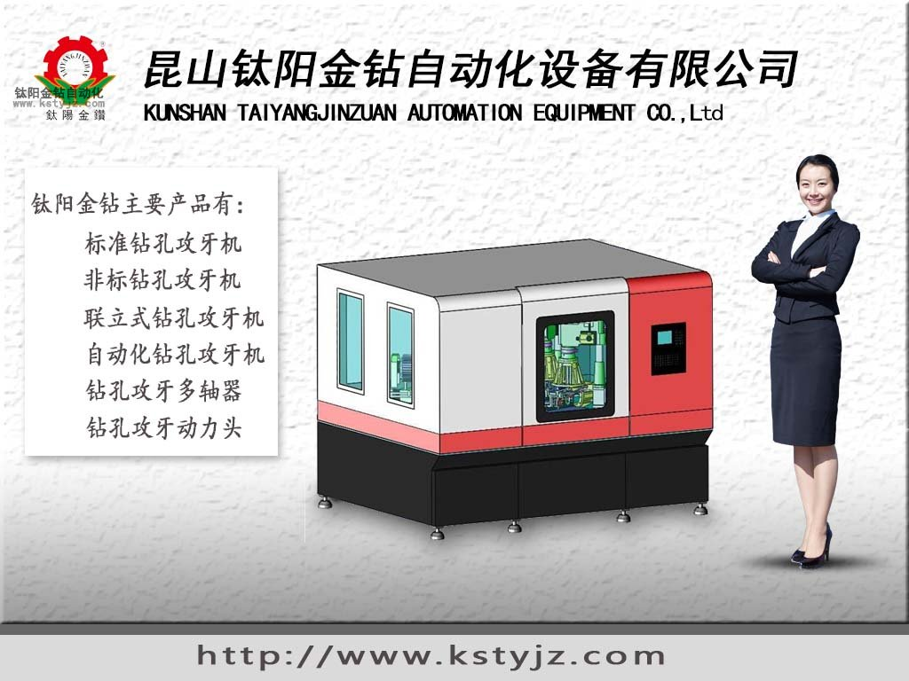

鑽床攻牙機精密自動化行業加快革新
精密鑽床攻牙機設備必須加快革新
近年來技術革新、行業革新及政策的改革推動了國內各行業的技術革新，精密機械行業也不例外。在產業結構前沿的機械母機行業面臨著重大的改革，要麼強化自身自主研發自主創新的機制，要麼被市場化的行業制度所淘汰。鈦陽金鑽攻牙機是台灣軍工精密機械生產單位，入駐大陸後本著以客戶為中心為客戶打造精密自動化設備為企業精神，力求做到每台機器出廠都要經過嚴格 的檢查保證客戶穩定使用。鈦陽金鑽攻牙機在大陸經營十幾年積累了廣大的用戶群體，吸取了豐富的國內廠家鑽床攻牙機機械使用經驗與使用習性。憑藉著十幾年的經驗積累，鈦陽金鑽攻牙機在精密鑽床攻牙機設計與生產上本著為客戶著想的態度，力求做到設計的機械更合理更人性化、更安全、更穩定，保障客戶的生產加工穩定運行。
精密機床的研發和製造技術是一項前沿性的技術，將引領機床的加工精度不斷向著人類未曾涉及的技術領域深入邁進。超精密機床技術的應用領域已拓展到我們日常生活的許多方面，並正在豐富和改變著我們的生活。
高精度是數控機床的主流趨勢
在過去的30年裡，世界範圍的機床技術得到了很大程度的發展，機床技術的發展趨勢也呈現出多元化的特點，比如高精度的趨勢、高速運動的趨勢、多運動軸的趨勢、高可靠性的趨勢、多功能復合化趨勢、可重構的趨勢、低能耗環保的趨勢以及智能化的趨勢等，但在所有的趨勢中，最能夠體現發展主流的趨勢應該是高精度和智能化的趨勢。
事實上，超精密加工技術所涉及的技術領域非常豐富。在北京機床研究所30多年的研究歷程中，針對超精密加工技術所涉及到的相關技術，劉炳業系統地總結出了36個方面的關鍵前沿研究以及11項領先的核心技術。其中，關鍵前沿研究包括設計、運動部件、測量分析、工藝技術、主機製造技術和機床應用條件技術六方面內容。領先的核心技術涵蓋：精密超精密主軸關鍵結構製造技術、精密超精密直線運動部件關鍵結構製造技術、高分辨率運動驅動技術、機床關鍵零部件的加工工藝製造技術、部件抵禦外部干擾的特性技術、高穩定性快速直線運動的結構與製造技術、多運動軸機床的嵌套結構設計技術，以及針對目標零件製造的機床集成製造技術等內容。
滿足超精密技術的應用需求
我國航天航空遙感、激光核聚變、國防武器系統、天文探測等先進技術領域，對大口徑非球面光學元件的需求日益增加，但國外部分高尖端光學加工設備和技術對我國實行禁運。目前，我國大口徑非球面零件加工工藝流程的相關科研工作已經開展，但成熟度還較低。同時，自行研製的設備加工精度與國外水平相比較低，優勢單位的有效聯合不足，還存在大口徑光學零件加工和超精密加工技術的結合程度較低等問題。
今後超精密機床的重點應用方向，硬車削、硬銑削加工將被大量應用，光整硬車削將代替磨削。超精密機床技術適用於加工汽車零件、軸承環、注射模具、液壓閥、滾珠、絲槓、螺母等，可以對不�袗�、鑄鐵、塑料、石墨、綠陶瓷等材料進行高精度車削。“超精密機床技術的應用可大幅提高生產率和精度，一些汽車零件的加工效率和表面質量將優於磨削。因為可以干切削，將更有利於環保。此外，超精密機床技術應用於硬切削機床將大大提高機床刀具的壽命。”


推薦文章
- 影響電動攻牙機性能的
- 何以自動攻牙機可以做
- 攻螺紋前鑽底孔直徑和
- 鑽孔機如何選擇,台式自
- 攻牙油 百 科
- 自動鑽床自動攻牙機離
- SPS-全自動鑽孔倒角攻牙
- 攻牙機原理,多功能機床
- 動力頭基本構造及相關
- 自動攻牙機深孔。小孔